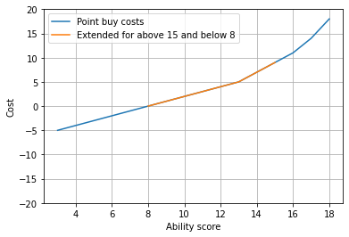
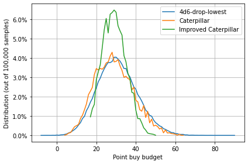
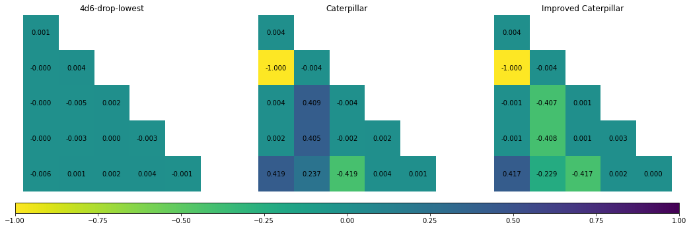

Code¶
# Set up link to python code
from myst_nb import glue
from importlib import reload
import pandas as pd
import matplotlib.pyplot as plt
import matplotlib
import sys
sys.path.append("../src/")
import CorrelationAnalysis
import StatArrays
import PandasHelper
# Generate stats
num_iterations = 100_000
stats_to_generate = {
"4d6-drop-lowest" : StatArrays.four_d_six_drop_lowest,
"Caterpillar" : StatArrays.caterpillar_stat_array,
"Improved Caterpillar" : StatArrays.caterpillar_stat_array2,
}
stats = pd.concat([
PandasHelper.stats_arrays_to_pd(
[stat_generator() for i in range(num_iterations)],
stat_label
) for stat_label, stat_generator in stats_to_generate.items()
],
axis=1
)
point_buy = stats.replace(StatArrays.point_buy_dict).groupby("iter").sum()
totals = stats.groupby("iter").sum()
# Line plot function
line_plot = lambda ax, df, c: ax.plot(df.index, df[c], label=c)
# Create stat distribution graph
fig, axes = plt.subplots()
stat_counts = PandasHelper.create_counts(stats, normalize=True)
[line_plot(axes, stat_counts, c) for c in stat_counts.columns]
num_samples = StatArrays.num_ability_scores*num_iterations
axes.set_ylabel(f"Distribution (out of {num_samples:,} samples)")
axes.set_xlabel("Ability score")
percent_formatter = matplotlib.ticker.PercentFormatter(xmax=1, decimals=1)
axes.yaxis.set_major_formatter(percent_formatter)
axes.legend()
axes.grid(True)
glue("stats_distribution_fig", fig, display=False)
# Create summary stats
summary_stats = stats.describe().applymap(PandasHelper.sig_figs, nsigfigs=3)
glue("summary_stats_df", summary_stats)
| 4d6-drop-lowest | Caterpillar | Improved Caterpillar | |
|---|---|---|---|
| count | 600000.0 | 600000.0 | 600000.0 |
| mean | 12.2 | 12.0 | 12.0 |
| std | 2.85 | 3.09 | 3.09 |
| min | 3.0 | 3.0 | 3.0 |
| 25% | 10.0 | 10.0 | 10.0 |
| 50% | 12.0 | 12.0 | 12.0 |
| 75% | 14.0 | 14.0 | 14.0 |
| max | 18.0 | 18.0 | 18.0 |
# Create fig of point buy cost schedule
point_buy_costs = [[k, v] for k, v in StatArrays.point_buy_dict.items()]
point_buy_costs_df = pd.DataFrame(point_buy_costs, columns = ["Score", "Cost"])
point_buy_orig = point_buy_costs_df.loc[ \
(point_buy_costs_df.Score >= 8) \
& (point_buy_costs_df.Score <= 15)
]
point_buy_fig, axes = plt.subplots()
axes.plot(point_buy_costs_df.Score, point_buy_costs_df.Cost, label="Point buy costs")
axes.plot(point_buy_orig.Score, point_buy_orig.Cost, label="Extended for above 15 and below 8")
axes.set_ylabel(f"Cost")
axes.set_xlabel("Ability score")
axes.set_ylim(-20, 20)
axes.legend()
axes.grid(True)
glue("point_buy_fig", point_buy_fig, display=False)

# Create point buy budget distribution
point_buy_counts = PandasHelper.create_counts(point_buy, normalize=True)
point_buy_dist_fig, axes = plt.subplots()
[line_plot(axes, point_buy_counts, c) for c in point_buy_counts.columns]
axes.set_ylabel(f"Distribution (out of {num_iterations:,} samples)")
percent_formatter = matplotlib.ticker.PercentFormatter(xmax=1, decimals=1)
axes.yaxis.set_major_formatter(percent_formatter)
axes.set_xlabel("Point buy budget")
axes.legend()
axes.grid(True)
point_buy_dist_fig.tight_layout()
glue("point_buy_dist_fig", point_buy_dist_fig, display=False)

# Create summary of point buy budget
point_buy_summ = point_buy.describe().applymap(PandasHelper.sig_figs, nsigfigs=3)
glue("summary_point_buy_df", point_buy_summ)
| 4d6-drop-lowest | Caterpillar | Improved Caterpillar | |
|---|---|---|---|
| count | 100000.0 | 100000.0 | 100000.0 |
| mean | 30.8 | 29.1 | 29.2 |
| std | 10.1 | 9.82 | 5.95 |
| min | -8.0 | 4.0 | 17.0 |
| 25% | 24.0 | 22.0 | 25.0 |
| 50% | 30.0 | 28.0 | 29.0 |
| 75% | 37.0 | 36.0 | 33.0 |
| max | 82.0 | 66.0 | 50.0 |
# Create stat array scenarios
stats_above_15 = (stats > 15).groupby("iter").sum()
stats_above_13 = (stats > 13).groupby("iter").sum()
stats_below_10 = (stats < 10).groupby("iter").sum()
## % of records with 2+ stats above 15 and only 0 or 1 stat below 10
scenario1 = ((stats_above_15 >= 2) & (stats_below_10 <= 1)).mean()
## % of records with 3+ stats above 13 and only 0 or 1 stat below 10
scenario2 = ((stats_above_13 >= 3) & (stats_below_10 <= 1)).mean()
## % of records with only 0 or 1 stat above 15 and 3+ stats below 10
scenario3 = ((stats_above_15 <= 1) & (stats_below_10 >= 3)).mean()
## % of records with only 0 or 1 stats above 13 and 2+ stats below 10
scenario4 = ((stats_above_13 <= 1) & (stats_below_10 >= 2)).mean()
scenarios = pd.concat(
[scenario1, scenario2, scenario3, scenario4],
axis=1,
keys=["Scenario "+str(i) for i in range(1,5)]).T
scenarios = scenarios[["4d6-drop-lowest", "Caterpillar", "Improved Caterpillar"]]
scenarios = scenarios.applymap(lambda x: "{:.1%}".format(x))
glue("scenarios_df", scenarios, display=False)
# # Correlation analysis
corr_fig = CorrelationAnalysis.analyse(stats)
glue("corr_fig", corr_fig, display=False)

reload(StatArrays)
# Generate stats
stats_13th_age = [StatArrays.thirtheenth_age() for i in range(num_iterations)]
stats_13th_age = PandasHelper.stats_arrays_to_pd(stats_13th_age, "13th Age")
stats_13th_age = pd.concat([stats[["4d6-drop-lowest", "Improved Caterpillar"]], stats_13th_age], axis=1)
point_buy_13th_age = stats_13th_age.replace(StatArrays.point_buy_dict).groupby("iter").sum()
totals_13th_age = stats_13th_age.groupby("iter").sum()
# Create stat distribution graph
fig_13th_age, axes = plt.subplots(ncols=2, figsize=(8, 4))
stat_counts = PandasHelper.create_counts(stats_13th_age, normalize=True)
[line_plot(axes[0], stat_counts, c) for c in stat_counts.columns]
num_samples = StatArrays.num_ability_scores*num_iterations
axes[0].set_ylabel(f"Distribution (out of {num_samples:,} samples)")
axes[0].set_xlabel("Ability score")
percent_formatter = matplotlib.ticker.PercentFormatter(xmax=1, decimals=1)
axes[0].yaxis.set_major_formatter(percent_formatter)
axes[0].legend()
axes[0].grid(True)
# Create point buy budget distribution
point_buy_counts = PandasHelper.create_counts(point_buy_13th_age, normalize=True)
[line_plot(axes[1], point_buy_counts, c) for c in point_buy_counts.columns]
axes[1].set_ylabel(f"Distribution (out of {num_iterations:,} samples)")
percent_formatter = matplotlib.ticker.PercentFormatter(xmax=1, decimals=1)
axes[1].yaxis.set_major_formatter(percent_formatter)
axes[1].set_xlabel("Point buy budget")
axes[1].legend()
axes[1].grid(True)
fig_13th_age.tight_layout()
glue("13th_age_fig", fig_13th_age, display=False)
glue("13th_age_stats", stats_13th_age.describe())
| 4d6-drop-lowest | Improved Caterpillar | 13th Age | |
|---|---|---|---|
| count | 600000.000000 | 600000.000000 | 600000.000000 |
| mean | 12.247675 | 11.960278 | 12.000000 |
| std | 2.846277 | 3.090269 | 2.825212 |
| min | 3.000000 | 3.000000 | 6.000000 |
| 25% | 10.000000 | 10.000000 | 10.000000 |
| 50% | 12.000000 | 12.000000 | 12.000000 |
| 75% | 14.000000 | 14.000000 | 14.000000 |
| max | 18.000000 | 18.000000 | 18.000000 |
# Generate stats
stats_one_random = [StatArrays.caterpillar_with_one_random_die() for i in range(num_iterations)]
stats_one_random = PandasHelper.stats_arrays_to_pd(stats_one_random, "Roll again for 1 stat")
stats_one_random = pd.concat([stats[["4d6-drop-lowest", "Improved Caterpillar"]], stats_one_random], axis=1)
point_buy_one_random = stats_one_random.replace(StatArrays.point_buy_dict).groupby("iter").sum()
totals_one_random = stats_one_random.groupby("iter").sum()
# Create stat distribution graph
fig_one_random, axes = plt.subplots(ncols=2, figsize=(8, 4))
stat_counts = PandasHelper.create_counts(stats_one_random, normalize=True)
[line_plot(axes[0], stat_counts, c) for c in stat_counts.columns]
num_samples = StatArrays.num_ability_scores*num_iterations
axes[0].set_ylabel(f"Distribution (out of {num_samples:,} samples)")
axes[0].set_xlabel("Ability score")
percent_formatter = matplotlib.ticker.PercentFormatter(xmax=1, decimals=1)
axes[0].yaxis.set_major_formatter(percent_formatter)
axes[0].legend()
axes[0].grid(True)
# Create point buy budget distribution
point_buy_counts = PandasHelper.create_counts(point_buy_one_random, normalize=True)
[line_plot(axes[1], point_buy_counts, c) for c in point_buy_counts.columns]
axes[1].set_ylabel(f"Distribution (out of {num_iterations:,} samples)")
percent_formatter = matplotlib.ticker.PercentFormatter(xmax=1, decimals=1)
axes[1].yaxis.set_major_formatter(percent_formatter)
axes[1].set_xlabel("Point buy budget")
axes[1].legend()
axes[1].grid(True)
fig_one_random.tight_layout()
glue("one_random_fig", fig_one_random, display=False)
glue("one_random_stats", stats_one_random.describe())
| 4d6-drop-lowest | Improved Caterpillar | Roll again for 1 stat | |
|---|---|---|---|
| count | 600000.000000 | 600000.000000 | 600000.000000 |
| mean | 12.247675 | 11.960278 | 11.956742 |
| std | 2.846277 | 3.090269 | 3.086427 |
| min | 3.000000 | 3.000000 | 3.000000 |
| 25% | 10.000000 | 10.000000 | 10.000000 |
| 50% | 12.000000 | 12.000000 | 12.000000 |
| 75% | 14.000000 | 14.000000 | 14.000000 |
| max | 18.000000 | 18.000000 | 18.000000 |